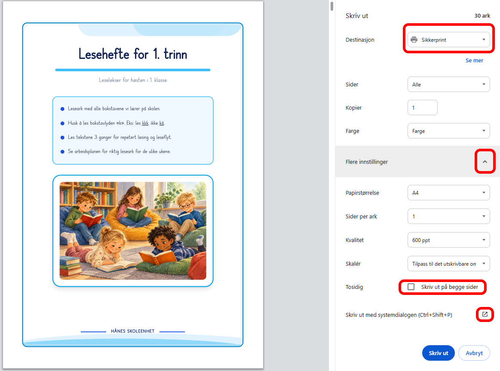
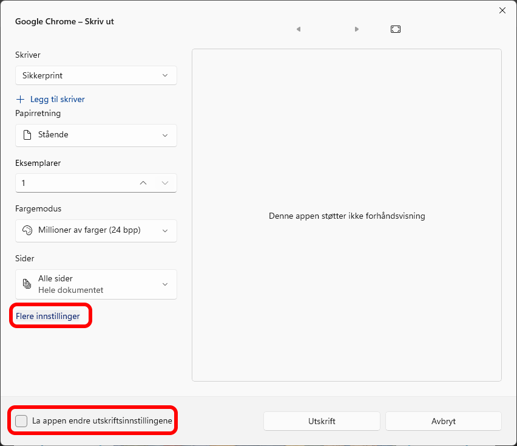
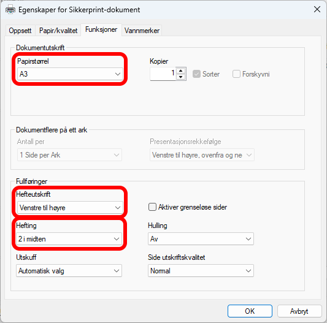
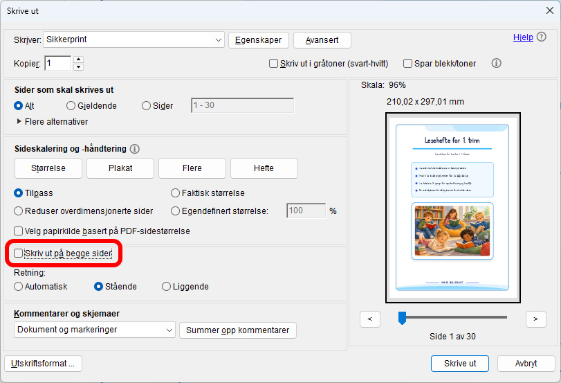

Tilpass hvilken uke hvert enkelt leseark tilhører.
Veiledning for lagring av PDF og hefteutskrift
1. Lagre som PDF:
2. Skriv ut PDF-filen som hefte:




Klikk på et bilde for å forstørre det.
Steg 2: Åpne PDF-filen og velg hefteutskrift
1. Åpne den lagrede PDF-filen:
Klikk på knappen under for å åpne PDF-en i nettleseren, eller åpne filen direkte i Adobe Reader fra datamaskinen:
2. Trykk Skriv ut (Ctrl + P) og følg veiledningen:
Klikk på et bilde for å forstørre det.
Logg inn for utskrift uten vannmerke